| S. NO. | COVER TYPE | NAME OF THE COVER | DATE OF ISSUE | LOCATION | STATE | PINCODE | IMAGE |
|---|
| 1 | Special Cover | Seventh National Stamp Exhibition, Tiruchirappalli | 17.09.1971 | Tiruchirappalli | Tamil Nadu | 620001 | |
| 2 | Special Cover | 73 INDIPEX: Stamp Designers' Day and Sanchi Stupa Gate | 17.11.1973 | New Delhi | Delhi | 110001 |  |
| 3 | Special Cover | 75 KARNAPEX: Shilabalike & Mahishasura | 15.06.1975 | Bangalore | Karnataka | 560001 | |
| 4 | Special Cover | TANAPEX 75: Thanjavur Art Plate | 06.09.1975 | Madras | Tamil Nadu | 600001 | |
| 5 | Special Cover | Mangalapex 76: Chariot of Sreekrishna Temple, Udupi | 14.03.1976 | Mangalore | Karnataka | 575001 | |
| 6 | Special Cover | Mysopex 76: Jambu Savari and Maishasura Mardhini | 25.09.1976 | Mysore | Karnataka | 570001 | |
| 7 | Special Cover | BIPEX-76: Madhubani Rural Paintwork Wedding Ceremony) and Chhow Dance | 31.10.1976 | Wheeler Senate Hall, Patna | Bihar | 800005 |  |
| 8 | Special Cover | Moheswar with Sati on his Shoulder and Kamakhya Temple - Kamakhya | 18.11.1976 | Kamakhya | Assam | 781010 | |
| 9 | Special Cover | Kumbha Prayag, Saka 1898 | 18.01.1977 | Central Post Office Kumbha Nagar | Uttar Pradesh | 211020 |  |
| 10 | Special Cover | Udupex 78: Sri Krishna Temple and St Lawrence Church, Karkala | 15.01.1978 | Udupi | Karnataka | 576101 | |
| 11 | Special Cover | Combo: UPHILEX-76: Kedarnath | 02.03.1978 | Lucknow | Lucknow | 226001 | |
| 12 | Special Cover | Sri Meenakshi's Wedding | 20.04.1978 | Madurai | Tamil Nadu | 625001 | |
| 13 | Special Cover | Dakiana-78: Marble Inlay Work | 06.05.1978 | New Delhi | Delhi | 110001 |  |
| 14 | Special Cover | PUNEPEX 78 | 27.05.1978 | Pune | Maharashtra | 411001 | |
| 15 | Special Cover | Second World Hindu Conference | 25.01.1979 | Allahabad | Uttar Pradesh | 211001 |  |
| 16 | Special Cover | KASHPEX-79: Radha and Krishna | 22.05.1979 | Jammu | Jammu and Kashmir | 180001 | |
| 17 | Special Cover | Fifth World Sanskrit Conference, Varanasi | 21.10.1981 | Varanasi | Uttar Pradesh | 221001 | |
| 18 | Special Cover | Inauguration of Bangalore GPO Building by Shri Rajiv Gandhi, Prime Minister | 13.11.1986 | Bangalore | Karnataka | 560001 |  |
| 19 | Special Cover | Inauguration of Bangalore GPO Building by Shri Rajiv Gandhi, Prime Minister and MRF World Series For the Jawaharlal Nehru Cup | 01.11.1989 | Anna Road, Madras | Tamil Nadu | 600002 |  |
| 20 | Special Cover | Swami Vivekananda-Centenary of Jodhpur Visit | 10.03.1999 | Jodhpur | Rajasthan | 342001 | |
| 21 | Special Cover | COINEX-2001: 10th Anniversary Madras Coin Society | 27.12.2001 | Chennai | Tamil Nadu | 600106 | |
| 22 | Special Cover | 10th Year Indian Holistic Medical Academy 40th Year Medicina Alterniva | 12.08.2002 | Thanjavur | Tamil Nadu | 613001 | |
| 23 | Special Cover | APPEX 2003: Moola Brindavanam of Sri Rayaru | 17.10.2003 | Hyderabad | Andhra Pradesh | 500004 | |
| 24 | Special Cover | Heritage Day | 10.08.2007 | Bangalore | Karnataka | 560001 | |
| 25 | Special Cover | Akshara Day | 11.08.2007 | Bangalore | Karnataka | 560001 | |
| 26 | Special Cover | Indian Bank Centenary Year Celebrations | 19.08.2007 | Chennai | Tamil Nadu | 600028 | |
| 27 | Special Cover | KUMARIPEX 2008: Kanyakumari District Philatelic and Numismatic Association | 11.07.2008 | Nagercoil | Tamil Nadu | 629001 | |
| 28 | Special Cover | Cardiological Society of India 60th Annual Conference | 29.11.2008 | Chennai | Tamil Nadu | 600017 | |
| 29 | Special Cover | 150 Years Guntur Numismatic & Philatelic Society: 10th Anniversary - Sri Venkateswara Swamy Temple, Guntur | 04.12.2009 | Guntur | Andhra Pradesh | 522006 | |
| 30 | Special Cover | 150 Years Guntur Numismatic & Philatelic Society: Annamayya Kalavedika, Guntur | 05.12.2009 | Guntur | Andhra Pradesh | 522006 |  |
| 31 | Special Cover | 150 Years Guntur Numismatic & Philatelic Society: Uppalapadu Bird Sanctuary, Guntur District | 06.12.2009 | Guntur | Andhra Pradesh | 522006 | |
| 32 | Special Cover | 150th Birth Anniversary of Viswakobi Rabindranath Tagore 1861-2011 Joint Celebration | 06.05.2011 | Dhaka | Bangladesh | 1000 | |
| 33 | Special Cover | 10th Anniversary of Vigilance Study Circle 2003-2013 | 06.07.2013 | Hyderabad | Andhra Pradesh | 500001 | |
| 34 | Special Cover | 150 Years of Coorg Education Fund 1863-2013 | 29.10.2013 | Madikeri | Karnataka | 571201 | |
| 35 | Special Cover | Gandhi Smruthi 2014: Philatelic and Numismatic Exhibition on Mahatma | 12.01.2014 | Payyanur | Kerala | 670307 | |
| 36 | Special Cover | Laxman Mandir, Sirpur | 31.01.2014 | Raipur | Chhattisgarh | 492001 | |
| 37 | Special Cover | A Tribute to a Legend: Late Qadir Ali Baig 1939-1984 | 03.05.2014 | Jubilee | Andhra Pradesh | 500002 | |
| 38 | Special Cover | Red Building Centenary | 24.07.2014 | Chennai | Tamil Nadu | 600008 | |
| 39 | Special Cover | Vivekananda College - Golden Jubilee Celebrations | 07.01.2015 | Nehrunagar (Puttur D. K.) | Karnataka | 574203 | -VivekanandaCollegeGoldenJubileeCelebrations.jpg) |
| 40 | Special Cover | KARNAPEX 2015: Clock-Tower, Virajpet Centenary Celebration | 16.01.2015 | Bangalore | Karnataka | 560001 | |
| 41 | Special Cover | KARNAPEX 2015: Vigyaan Diwas Mars Orbitor Mission: India's First Mission to MARS | 16.01.2015 | Bangalore | Karnataka | 560001 | |
| 42 | Special Cover | Renaming of Bangalore - Bengaluru | 16.01.2015 | Bangalore | Karnataka | 560001 | |
| 43 | Special Cover | Renaming of Belgaum - Belagavi | 16.01.2015 | Bangalore | Karnataka | 560001 | |
| 44 | Special Cover | Renaming of Bellary - Ballari | 16.01.2015 | Bangalore | Karnataka | 560001 | 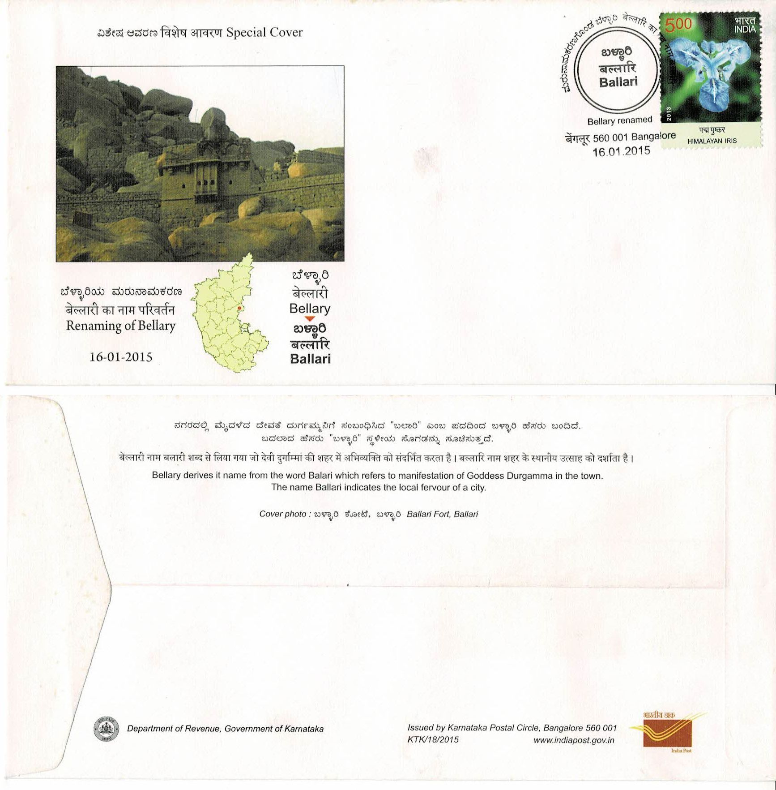 |
| 45 | Special Cover | Renaming of Bijapur - Vijayapura | 16.01.2015 | Bangalore | Karnataka | 560001 | |
| 46 | Special Cover | Renaming of Chikmagalur - Chikkamagaluru | 16.01.2015 | Bangalore | Karnataka | 560001 | |
| 47 | Special Cover | Renaming of Gulbarga - Kalaburagi | 16.01.2015 | Bangalore | Karnataka | 560001 | |
| 48 | Special Cover | Renaming of Hospet - Hosapete | 16.01.2015 | Bangalore | Karnataka | 560001 | |
| 49 | Special Cover | Renaming of Hubli - Hubballi | 16.01.2015 | Bangalore | Karnataka | 560001 | 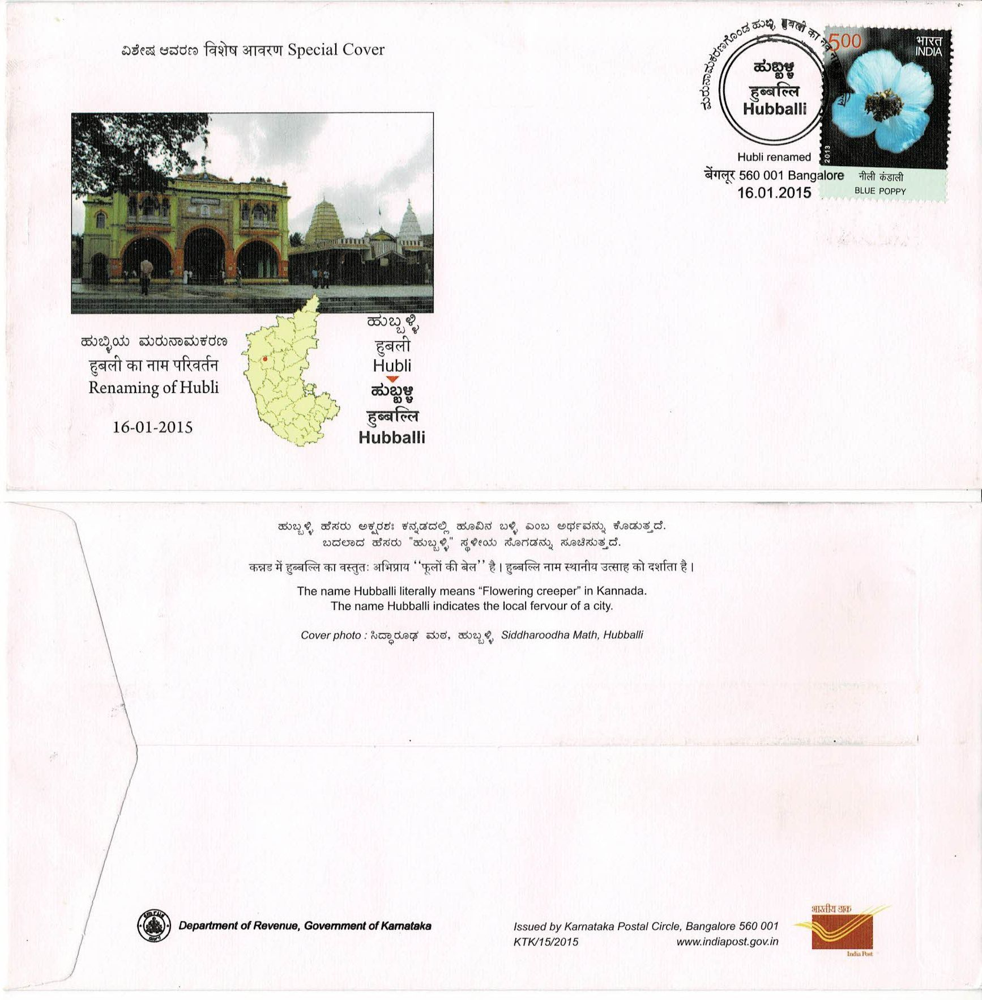 |
| 50 | Special Cover | Renaming of Mangalore - Mangaluru | 16.01.2015 | Bangalore | Karnataka | 560001 | |
| 51 | Special Cover | Renaming of Mysore - Mysuru | 16.01.2015 | Bangalore | Karnataka | 560001 | |
| 52 | Special Cover | Renaming of Shimoga - Shivamogga | 16.01.2015 | Bangalore | Karnataka | 560001 | |
| 53 | Special Cover | Renaming of Tumkur - Tumakuru | 16.01.2015 | Bangalore | Karnataka | 560001 | |
| 54 | Special Cover | KARNAPEX 2015: Samskriti Diwas Heritage - Bengaluru | 17.01.2015 | Bangalore | Karnataka | 560001 | |
| 55 | Blank Special Cover | KARNAPEX 2015: Say No To Child Labour | 17.01.2015 | none | none | none | |
| 56 | Special Cover | KARNAPEX 2015: Rotary Bangalore South Celebrates the Birth Centenary of Jonas Edward Salk Discoverer of the Polio Vaccine | 18.01.2015 | Bangalore | Karnataka | 560001 | |
| 57 | Special Cover | Centenary Year of Mahatma Gandhi's Return to India | 19.01.2015 | Bangalore | Karnataka | 560001 | |
| 58 | Special Cover | KARNAPEX 2015: A Century in Service of Commerce and Industry: Federation of Karnataka Chambers of Commerce and Industry (FKCCI) | 19.01.2015 | Bangalore | Karnataka | 560001 | |
| 59 | Special Cover | Agri Machinery Fair-III 2015: 40 Years of Dedicated Service | 24.01.2015 | Nehrunagar (Puttur D. K.) | Karnataka | 574203 | -AgriMachineryFairIII201540YearsofDedicatedService.jpg) |
| 60 | Special Cover | 9th National Business Plan Commission: 15 Years of Grassroots Level Entrepreneurship Development | 31.01.2015 | Bangalore | Karnataka | 560001 | |
| 61 | Special Cover | Bojjanakonda and Lingalametta Hillocks - Sankaram (Anakapalli) 240 B.C. | 15.05.2015 | Kakinada | Andhra Pradesh | 533001 | |
| 62 | Special Cover | Combo: Visvesvaraya Industrial & Technological Museum Golden Jubilee Celebrations | 27.07.2015 | Bangalore | Karnataka | 560001 | |
| 63 | Special Cover | Golden Jubilee Celebrations of Chengalpattu Medical College | 21.08.2015 | Chengalpattu | Tamil Nadu | 603001 | |
| 64 | Special Cover | Platinum Jubilee Celebration: CSI Corley Higher Secondary School | 04.02.2016 | Tambaram | Tamil Nadu | 600059 | |
| 65 | Special Cover | Golden Jubilee Celebrations: Inner Wheel Club of Madras | 11.02.2016 | Chennai | Tamil Nadu | 600115 | |
| 66 | Special Cover | Indian Coast Guard Air Station Chennai Silver Jubilee | 07.03.2016 | Chennai | Tamil Nadu | 600016 | |
| 67 | Special Cover | Centenary Celebrations 1916-2016: University of Mysore | 22.03.2016 | Mysuru University | Karnataka | 570005 |  |
| 68 | Special Cover | 40th Year Celebration: Lioness Club - Nandambakkam | 28.03.2016 | Chennai | Tamil Nadu | 600004 | |
| 69 | Special Cover | Ter-Centenary Martyrdom of Baba Banda Singh Bahadur | 20.06.2016 | New Delhi | Delhi | 110001 |  |
| 70 | Special Cover | Rio 2016 | 10.08.2016 | Chennai | Tamil Nadu | 600002 | |
| 71 | Special Cover | 125th Anniversary of Sacred Heart Latin Church Thrissur, Kerala, Diocese of Kottapuram | 30.08.2016 | Thrissur | Kerala | 680001 | |
| 72 | Special Cover | Rajiv Gandhi Khel Ratna 2016 Awardees: Quartet - Nation's Pride | 31.08.2016 | Bangalore | Karnataka | 560001 | |
| 73 | Special Cover | Manonmaniam Sundaranar University | 08.09.2016 | Tirunelveli | Tamil Nadu | 627012 |  |
| 74 | Special Cover | 75th Foundation Day: Ram Gopal Hindi Vidyalaya, Balangir (Odisha) | 24.09.2016 | Balangir | Odisha | 767001 | |
| 75 | Special Cover | Philanthropist Seth Shri Bhairondanji Sethia | 19.10.2016 | Bikaner | Rajasthan | 334001 | |
| 76 | Special Cover | Jaydev-Kanduli Mela: BALAKA-Birbhum Stamp Exhibition | 02.12.2016 | Santiniketan | West Bengal | 731235 | |
| 77 | Special Cover | TANAPEX 2017: 250 Years of Thyagabrahmam | 06.01.2017 | Chennai | Tamil Nadu | 600030 | |
| 78 | Special Cover | Pravasi Bharatiya Diwas | 07.01.2017 | Bengaluru | Karnataka | 560001 | |
| 79 | Special Cover | Shiv Circuit: Dumka | 17.01.2017 | Dumka | Jharkhand | 814101 |  |
| 80 | Special Cover | Davanadurgapex 2017: Dr. Shree Shivamurthy Murugha Sharanara Peetharohana - Silver Jubilee Celebration | 19.01.2017 | Davanagere | Karnataka | 577001 | |
| 81 | Special Cover | 120th Birth Anniversary of Netaji Subhas Chandra Bose | 23.01.2017 | Bangalore | Karnataka | 560001 | |
| 82 | Special Cover | World Theatre Day: Remembrance of Kannada Theatre Heritage | 27.03.2017 | Bengaluru City MDG | Karnataka | 560002 |  |
| 83 | Special Cover | The Tamilnadu Circle Postal Co-operative Bank Ltd (No. 1031) Estd - 1913 | 27.03.2017 | Chennai | Tamil Nadu | 600006 | |
| 84 | Special Cover | Combo: World Heritage Day: Chennakeshava Temple, Belur | 18.04.2017 | Bengaluru | Karnataka | 560001 | |
| 85 | Special Cover | Combo: World Heritage Day: Halebeedu Hoyasaleshwara Temple | 18.04.2017 | Bengaluru | Karnataka | 560001 | |
| 86 | Special Cover | Combo: World Heritage Day: Keerthinarayana Temple of Talakadu | 18.04.2017 | Bengaluru | Karnataka | 560001 | |
| 87 | Special Cover | World Environment Day | 05.06.2017 | Chennai | Tamil Nadu | 600002 | |
| 88 | Special Cover | The Rotary Club of Riverside: Swachh Bharat Abhiyan 2016-2017 | 23.06.2017 | Pune | Maharashtra | 411001 | |
| 89 | Special Cover | Karnataka Philatelic Society honours Karnataka's Sporting Legends | 14.07.2017 | Rajajinagar | Karnataka | 560010 | |
| 90 | Special Cover | Raksha Bandhan 2017 | 07.08.2017 | Rajajinagar | Karnataka | 560010 | |
| 91 | Special Cover | District Annettes Club, Grandeur 3232: End Polio Now | 20.08.2017 | Chennai | Tamil Nadu | 600002 | |
| 92 | Special Cover | Jain Acharya Dhyanyogi Dr. Shiv Muni Maharaj's 75 Years of Divine Life | 14.09.2017 | Bengaluru | Karnataka | 560001 | |
| 93 | Special Cover | Third Anniversary of Swacch Bharat Mission | 17.09.2017 | Chennai | Tamil Nadu | 600010 | |
| 94 | Special Cover | Brahmasri Tadepally Venkata Subrahmanya Sastry Birth Centenary 1918-2017 | 19.09.2017 | Tenali | Andhra Pradesh | 522201 | |
| 95 | Special Cover | Swacchata Ki Seva Pakhwara (15.09.2017 to 02.10.2017) | 22.09.2017 | Jaipur | Rajasthan | 302001 | |
| 96 | Special Cover | The Hanumanthanagar Co-op Bank Ltd., Golden Jubilee | 23.09.2017 | Basavanagudi | Karnataka | 560004 | |
| 97 | Special Cover | 25 Years of Commissioned Service By INS Rajali | 23.09.2017 | Arakkonam | Tamil Nadu | 631006 | |
| 98 | Special Cover | Diamond Jubilee Celebration of Vidhana Soudha: 60 Years | 25.10.2017 | Bengaluru | Karnataka | 560001 | |
| 99 | Special Cover | The Ideal Fine Art Society, Kalaburagi Golden Jubilee 1965-2015 | 05.12.2017 | Kalaburagi | Karnataka | 585105 | 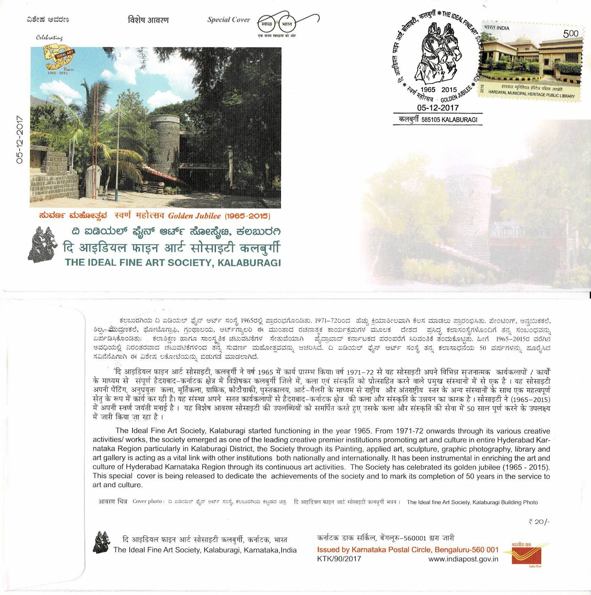 |
| 100 | Special Cover | AIDS Awareness | 07.12.2017 | Kolar | Karnataka | 563101 | |
| 101 | Special Cover | Society of St. Vincent De Paul, Mattom Conference | 09.12.2017 | Mattom | Kerala | 680602 | |
| 102 | Special Cover | Uttarakannadapex 2017: Mhatobar Shri Murudeshwar Temple | 16.12.2017 | Kumta | Karnataka | 581343 | |
| 103 | Special Cover | Dr. Nerella Venu Madhav:70 Years Celebrations in Art of Mimicry | 26.12.2017 | Hyderabad | Telangana | 500001 | |
| 104 | Special Cover | On the Eve of 2nd Paryaya of Sri Sri Vidyadheesha Tirtha Swamiji, Sri Palimaru Mutt, Udupi | 03.01.2018 | Udupi | Karnataka | 576101 | |
| 105 | Special Cover | Officers Training Academy | 15.01.2018 | Chennai | Tamil Nadu | 600016 | |
| 106 | Special Cover | Sri Siddheshwar Sankramana Jathra Centenary, Vijayapura (1918-2018) | 16.01.2018 | Vijayapura | Karnataka | 586101 | |
| 107 | Special Cover | Celebrating 80 Fruitful Years of Seerhood: Sri Sri Vishwesha Theertha Swamiji, Sri Pejawar Adhokshaja Mutt, Udupi | 17.01.2018 | Udupi | Karnataka | 576101 | 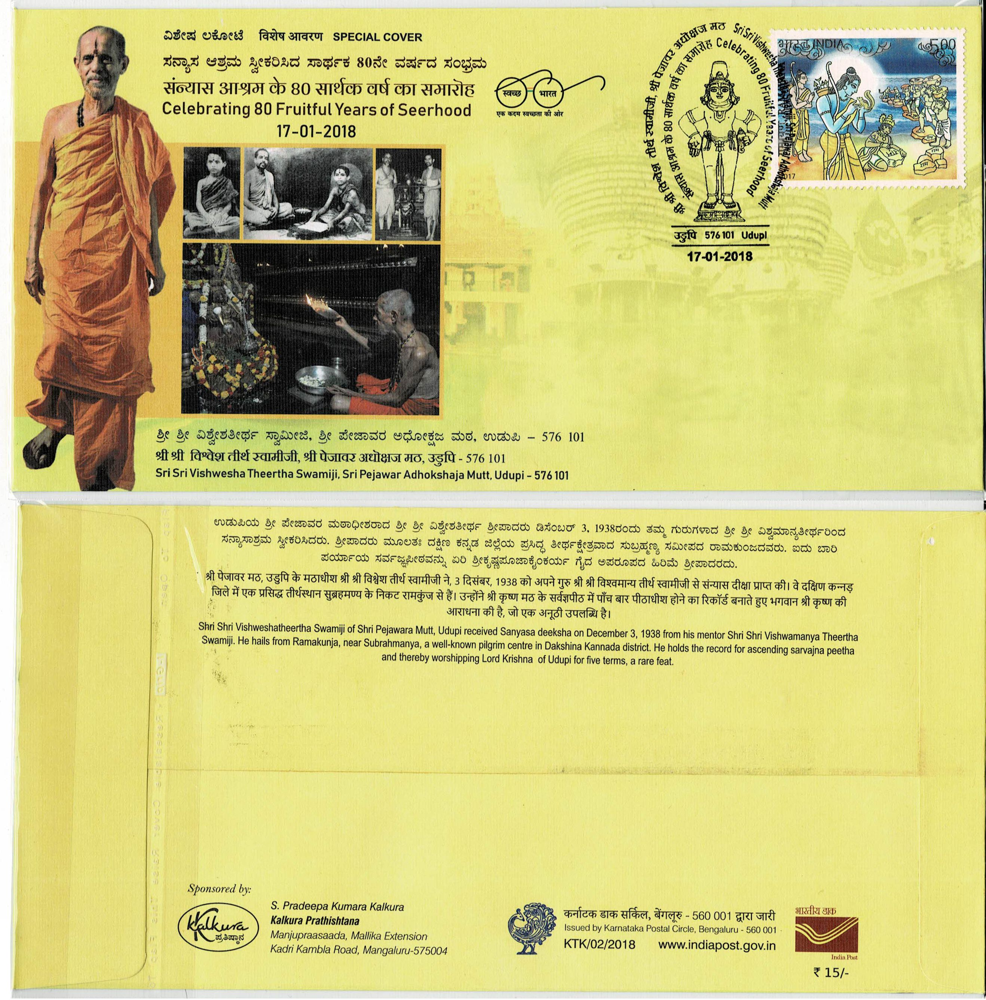 |
| 108 | Special Cover | Lakkundi Utsav - 2018 | 27.01.2018 | Lakkundi | Karnataka | 582115 | |
| 109 | Special Cover | Karnataka Vintage & Classic Car Club: World Automobile Day | 29.01.2018 | Bengaluru | Karnataka | 560001 | |
| 110 | Special Cover | Silver Jubilee Celebration: Nandi Sahakari Sakkare Karkhane Niyamit, Krishnanagar | 02.02.2018 | Babaleshwar | Karnataka | 586113 | |
| 111 | Special Cover | Celebrating Glorious 101 Years of Century Club | 10.02.2018 | Bengaluru | Karnataka | 560001 | |
| 112 | Special Cover | Shree Bahubaliswamy Mahamastakabhisheka Mahotsava-2018 | 17.02.2018 | Shravanabelagola | Karnataka | 573135 | |
| 113 | Special Cover | St. Agnes College: The First Women's College, Mangaluru | 20.02.2018 | Mangaluru | Karnataka | 575002 | |
| 114 | Special Cover | Amrita Sangama 2018: Brahmasthana Mahotsava | 20.02.2018 | Kodiyalbail | Karnataka | 575003 | |
| 115 | Special Cover | Shri Raghunath Priya Sadhu Maharaj Sukshetra Chimmad 1 | 22.02.2018 | Chimmad | Karnataka | 587312 | |
| 116 | Special Cover | Shri Raghunath Priya Sadhu Maharaj Sukshetra Chimmad 2 | 22.02.2018 | Chimmad | Karnataka | 587312 | |
| 117 | Special Cover | Historic Shree Kshetra Hombuja Maharathotsava | 10.03.2018 | Humcha | Karnataka | 577436 | 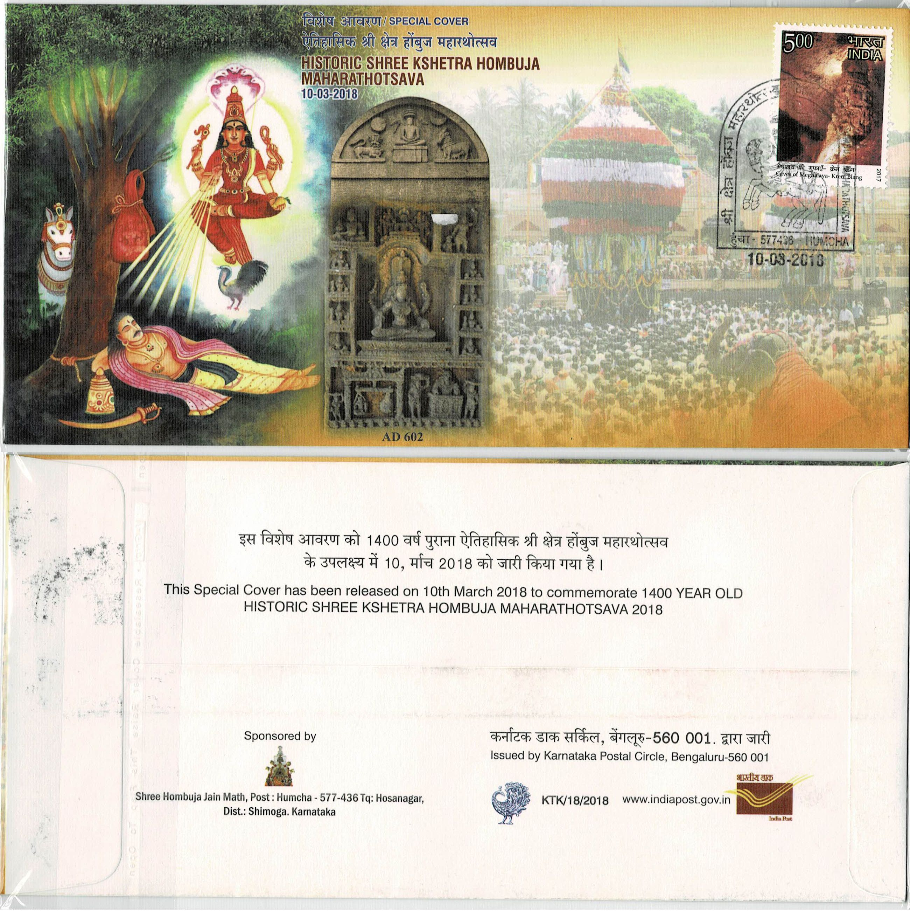 |
| 118 | Special Cover | Prathishta Vardhanti Utsav: Shri Tulja Bhavani Temple, Haliyal | 14.03.2018 | Haliyal | Karnataka | 581329 | |
| 119 | Special Cover | Shree DurgaParameshwari Temple, Bappanadu | 17.03.2018 | Mulki | Karnataka | 574154 | |
| 120 | Special Cover | Stephen Hawking 1942-2018 | 20.03.2018 | Bengaluru | Karnataka | 560001 | |
| 121 | Special Cover | Sri Urukunda Eranna Swamy Temple - Pallaki Utsav 2018 | 27.03.2018 | Urukuunda | Andhra Pradesh | 518344 | |
| 122 | Special Cover | Yogishwar Yagnavalkya | 11.04.2018 | Chamarajapet | Karnataka | 560018 | |
| 123 | Special Cover | Shri Channabasaveshwar Gurukul Resi. School Silver Jubilee Celebrations (1992-2017) | 21.04.2018 | Bhalki | Karnataka | 585328 | |
| 124 | Special Cover | BAIF Goden Jubilee 1967-2017 | 27.04.2018 | Pune | Maharashtra | 411001 | |
| 125 | Special Cover | Buddha Purnima | 30.04.2018 | Allahabad | Uttar Pradesh | 211001 | |
| 126 | Blank Special Cover | Surya Namaskar | 21.06.2018 | none | Maharashtra | none | |
| 127 | Special Cover | Mahatma Gandhi's First Arrival at Allahabad 5th July, 1968 | 05.07.2018 | Allahabad | Uttar Pradesh | 211001 | |
| 128 | Special Cover | KALASAGAR: 27 Glorious Years Dedicated to Art | 04.08.2018 | Aurangabad | Maharashtra | 431001 | |
| 129 | Special Cover | 2018 Kundathipex: Natchiarkoil Kal Garuda | 09.08.2018 | Kumbakonam | Tamil Nadu | 612001 | |
| 130 | Special Cover | 2018 Kundathipex: Sri Prathyangiradevi Temple - Ayyavadi | 09.08.2018 | Kumbakonam | Tamil Nadu | 612001 | |
| 131 | Special Cover | Swamimalai Traditional Chola Bronze Icons | 10.08.2018 | Kumbakonam | Tamil Nadu | 612001 | |
| 132 | Special Cover | 2018 Kundathipex: Sri Saraparameswar Temple - Tiruchirai | 11.08.2018 | Kumbakonam | Tamil Nadu | 612001 | 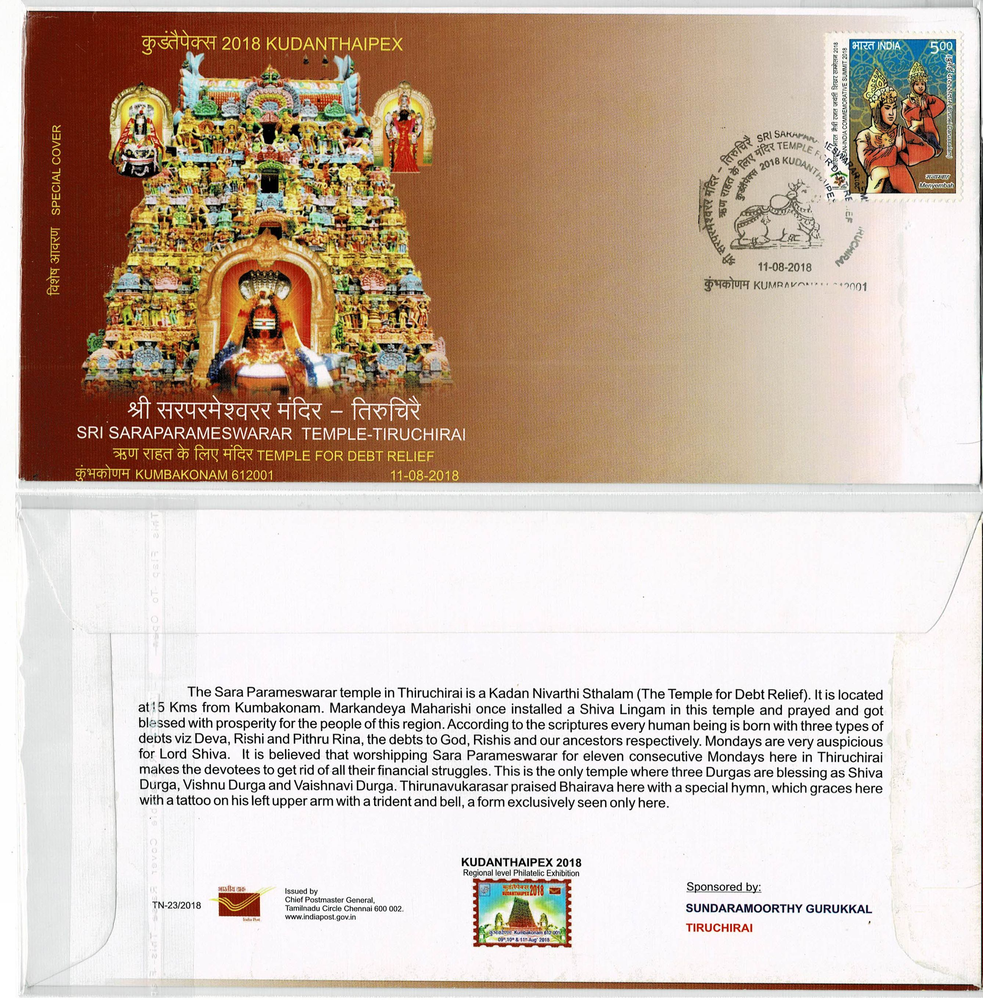 |
| 133 | Special Cover | 2018 World Elephant Day | 12.08.2018 | Mandakalli BO, Mysuru | Karnataka | 571311 |  |
| 134 | Special Cover | Bapu's Room Tiruchirappalli | 15.08.2018 | Tiruchirappalli | Tamil Nadu | 620001 | |
| 135 | Special Cover | Kannada Pustaka Pradhikara Silver Jubilee Celebration 1993-2018 | 29.08.2018 | Bengaluru City MDG | Karnataka | 560002 |  |
| 136 | Special Cover | SANGAMPEX 2018: Golden Lotus Tank - Meenakshi Amman Temple | 03.09.2018 | Madurai | Tamil Nadu | 625020 | |
| 137 | Special Cover | 150th Birth Anniversary of Mahatma Gandhi | 02.10.2018 | Bengaluru | Karnataka | 560001 | |
| 138 | Special Cover | Palaces of Mysuru | 17.10.2018 | Ittigegud | Karnataka | 570010 | |
| 139 | Special Cover | Platinum Jubilee Celebration: Vidyarthi Bhavan | 26.10.2018 | Bengaluru City MDG | Karnataka | 560002 |  |
| 140 | Special Cover | Sri Kalahasteeswara Swamivari Devasthanam, Sri Kalahasti | 16.11.2018 | Sri Kalahasti | Andhra Pradesh | 517644 |  |
| 141 | Special Cover | Bhoga Nandishwara Temple, Nandi | 17.11.2018 | Kolar | Karnataka | 563101 | |
| 142 | Special Cover | Sri Subrahmanyeswara Swamy Devasthanam - Mopidevi | 27.11.2018 | Mopidevi | Andhra Pradesh | 521125 | |
| 143 | Special Cover | Arulmigu Jambukeswarar Akhilandeswari Temple Maha Kumbabishagam | 12.12.2018 | Thiruvankovil | Tamil Nadu | 620005 | |
| 144 | Special Cover | Awadhpex 2019: Ram Ki Paidi, Ayodhya | 05.01.2019 | Faizabad | Uttar Pradesh | 224001 |  |
| 145 | Special Cover | Sukshetra Harkud | 07.01.2019 | Mudbi | Karnataka | 585437 | |
| 146 | Special Cover | Gurudwara-Shri Nanak Jhira Saheb | 09.01.2019 | Bidar | Karnataka | 585401 | |
| 147 | Special Cover | Swami Vivekananda in Prayag | 12.01.2019 | Allahabad | Uttar Pradesh | 211001 | |
| 148 | Special Cover | Alupotsava - 2019 | 25.01.2019 | Barkur | Karnataka | 576210 | |
| 149 | Special Cover | Gummanayakanapalya Fort | 26.01.2019 | Chikkaballapur | Karnataka | 562101 | |
| 150 | Special Cover | Leprosy Awareness Campaign | 30.01.2019 | Bidar | Karnataka | 585401 | |
| 151 | Special Cover | Gandhipex 2019: Mahatma - Mahakavi - Aurobindo | 01.02.2019 | Pondicherry | Puducherry | 605003 | |
| 152 | Special Cover | GANDHIPEX 2019: Jawaharlal Institute of Postgraduate Medical Education and Research (JIPMER) | 02.02.2019 | Pondicherry | Puducherry | 605003 | |
| 153 | Special Cover | GANDHIPEX 2019: Communal Harmony | 03.02.2019 | Pondicherry | Puducherry | 605003 | |
| 154 | Special Cover | 51st ISHACON - 2019 | 08.02.2019 | D. R. College | Karnataka | 560029 |  |
| 155 | Special Cover | Chidambarasharma, Shri Siddharoodha Math, Bidar | 11.02.2019 | Bidar Gandhigunj | Karnataka | 585403 |  |
| 156 | Special Cover | Mahatma Gandhiji's Visit to Mangaluru | 23.02.2019 | Mangaluru | Karnataka | 575001 | |
| 157 | Special Cover | Mahatma Gandhi at Udupi (25-02-1934), Eradication of Untouchability / Swadeshi Andolana | 25.02.2019 | Udupi | Karnataka | 576101 | |
| 158 | Special Cover | Mallikarjuna Swamy Temple, Togarsi | 16.03.2019 | Togarsi | Karnataka | 577433 | |
| 159 | Special Cover | Hirekalmata, Honnali | 18.03.2019 | Honnali | Karnataka | 577217 | |
| 160 | Special Cover | Shree Sadguru Shivayogi Halashankaraswamy, Gavimata, Basavapatna | 18.03.2019 | Basavapatna | Karnataka | 577551 | |
| 161 | Special Cover | V-Tech Engineers, Thirthahalli (Inventor of Areca Nut Peeling Machine) | 19.03.2019 | Thirthahalli | Karnataka | 577432 | |
| 162 | Special Cover | Sri Jayendra Saraswathi Shankaracharya Swamigal First Annual Aradhana | 19.03.2019 | Kanchipuram | Tamil Nadu | 631502 | |
| 163 | Special Cover | Kudli Rameshwara Temple and Sangama | 21.03.2019 | Kudli | Karnataka | 577227 | |
| 164 | Special Cover | Shree Lakshmi Narasimha Temple, Bhadravathi | 21.03.2019 | Bhadravathi | Karnataka | 577301 | |
| 165 | Special Cover | Cancer Patients Aid Association: Celebrating 50 Years of Cancer Care | 28.03.2019 | Mumbai | Maharashtra | 400001 | |
| 166 | Special Cover | Silver Jubilee Celebrations: Sri Rama Saran Seva Sangham Namaprayaga - Buddam | 29.04.2019 | Buddam | Andhra Pradesh | 522111 | |
| 167 | Special Cover | Suvarna Gopura Samarpanotsava: Paryaya Shri Palimaru Mutt, Udupi | 31.05.2019 | Udupi | Karnataka | 576101 | |
| 168 | Special Cover | Ayodhya Research Institute, Tulsi Smarak Bhawan, Ayodhya | 07.06.2019 | Ayodhya | Uttar Pradesh | 224123 | |
| 169 | Special Cover | Affiliation: Assam Rifles & Indian Coast Guard | 11.06.2019 | Chennai | Tamil Nadu | 600009 | |
| 170 | Special Cover | Ida Scudder School Golden Jubilee Year 1969-2019 | 13.06.2019 | Vellore | Tamil Nadu | 632006 | |
| 171 | Special Cover | 150th Birth Anniversary - Shri Shri Mahant Shivayogi Swamiji 1869-2019 | 24.06.2019 | Murgod | Karnataka | 591119 | |
| 172 | Special Cover | Athi Varadar - Kanchipuram | 18.07.2019 | Kanchipuram | Tamil Nadu | 631501 | |
| 173 | Special Cover | Ramleela of Varanasi | 27.07.2019 | Varanasi | Uttar Pradesh | 221001 | |
| 174 | Special Cover | Sandesh: Museum of Communication | 15.08.2018 | Sandesh Museum | Karnataka | 560025 |  |
| 175 | Special Cover | The Bharat Scouts and Guides - Tamil Nadu 10th Camporee; AM Jain Campus | 27.08.2019 | Chennai | Tamil Nadu | 600016 |  |
| 176 | Special Cover | Shri Dandeshwar Shankar Mandir Trust | 30.08.2019 | Mumbai | Maharashtra | 400001 |  |
| 177 | Special Cover | Dargah Hazrat Bara Shaheed | 12.09.2019 | Nellore | Andhra Pradesh | 524001 | 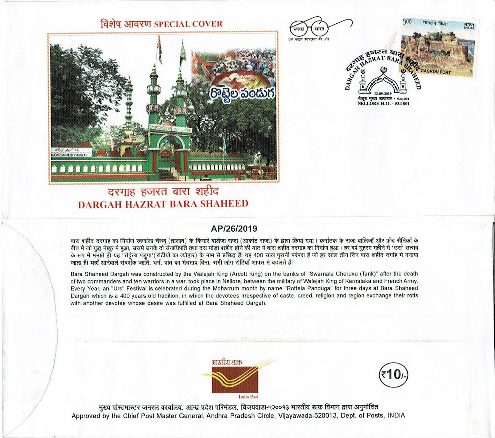 |
| 178 | Special Cover | Sri Jagadguru Srimadvirat Viswakarma Jayanthi | 17.09.2019 | Gudivada | Andhra Pradesh | 521301 | |
| 179 | Special Cover | Combo: World Tourism Day | 27.09.2019 | Bengaluru | Karnataka | 560001 | |
| 180 | Special Cover | Bapuji's Mysuru Visit | 27.09.2019 | Mysuru | Karnataka | 570001 | |
| 181 | Special Cover | 150 Years of Celebrating The Mahatma: Simple Living and High Thinking | 02.10.2019 | Chennai | Tamil Nadu | 600002 | |
| 182 | Special Cover | Ramatheertham | 05.10.2019 | Ramatheertham | Andhra Pradesh | 535218 | |
| 183 | Special Cover | KARNAPEX 2019: Anant Pai | 12.10.2019 | Mangaluru | Karnataka | 575003 | |
| 184 | Special Cover | KARNAPEX 2019: Girish Karnad | 12.10.2019 | Mangaluru | Karnataka | 575003 | |
| 185 | Special Cover | Pyditallama Sirimanotsavam | 30.10.2019 | Vizianagaram | Andhra Pradesh | 535002 | |
| 186 | Foreign Special Cover | BALIPHEX 2019: Sri Rama Day | 13.11.2019 | Denpasar, Bali | Indonesia | 80111 |  |
| 187 | Foreign Special Cover | BALIPHEX 2019: Sita Rama Day | 14.11.2019 | Denpasar, Bali | Indonesia | 80111 |  |
| 188 | Foreign Special Cover | BALIPHEX 2019: Laksmana Day | 15.11.2019 | Denpasar, Bali | Indonesia | 80111 |  |
| 189 | Foreign Special Cover | BALIPHEX 2019: Hanuman Day | 16.11.2019 | Denpasar, Bali | Indonesia | 80111 |  |
| 190 | Foreign Special Cover | BALIPHEX 2019: Jatayu Day | 17.11.2019 | Denpasar, Bali | Indonesia | 80111 |  |
| 191 | Special Cover | Hagalotsava Ratha, Shri Madhukeshwara Temple, Banavasi, Sirsi, Uttarakannada | 20.11.2019 | Banavasi | Karnataka | 581318 | |
| 192 | Special Cover | Platinum Jubilee Celebrations: Air Force Station, Avadi, Chennai | 10.12.2019 | Chennai | Tamil Nadu | 600055 | |
| 193 | Special Cover | Shri Manik Prabhu Temple - Maniknagar | 11.12.2019 | Maniknagar | Karnataka | 585353 | |
| 194 | Special Cover | Paryaya Mahotsava-Shree Adamaru Matha, Udupi | 08.01.2020 | Udupi | Karnataka | 576101 | |
| 195 | Special Cover | Cauvery: Timeless Treasures of Karnataka | 10.01.2020 | Science Institute | Karnataka | 560012 |  |
| 196 | Special Cover | The Bangalore Divine Life Society 1945-2020 | 14.01.2020 | HKP Road | Karnataka | 560051 |  |
| 197 | Special Cover | Sri Vidya Mandir Education Society Golden Jubilee Celebrations | 23.01.2020 | Malleswaram | Karnataka | 560003 | |
| 198 | Special Cover | Brahmins' Coffee Bar 1965-2020 | 27.01.2020 | Basavanagudi | Karnataka | 560004 | 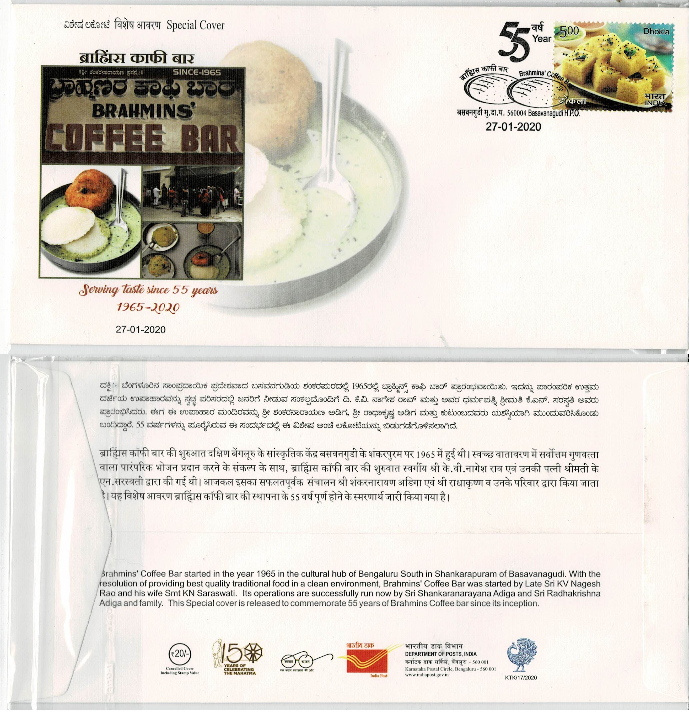 |
| 199 | Special Cover | Centenary Celebrations: Siravanapuram Kaumara Matalayam | 30.01.2020 | Coimbatore | Tamil Nadu | 641006 | |
| 200 | Special Cover | Ganga Aarti-Prayagraj | 29.02.2020 | Allahabad | Uttar Pradesh | 211001 | |
| 201 | Special Cover | 70th Birthday Dr. Vishnuvardhan | 18.09.2020 | Bengaluru | Karnataka | 560001 | |
| 202 | Foreign Special Cover | 4th DENPHEX 2020: Peringatan Hari Pos Sedunia | 09.10.2020 | Denpasar, Bali | Indonesia | 80111 |  |
| 203 | Special Cover | Adi Badri Narayan Temple | 13.10.2020 | Ambala | Haryana | 133001 | |
| 204 | Special Cover | Kapal Mochan | 13.10.2020 | Ambala | Haryana | 133001 |  |
| 205 | Special Cover | Saraswati Udgam Sthal Saraswati Kund Adi Badri | 13.10.2020 | Ambala | Haryana | 133001 | |
| 206 | Special Cover | Nav Durga (First Night): Shailputri | 17.10.2020 | Kolkata | West Bengal | 700001 | |
| 207 | Special Cover | Nav Durga (Second Night): Brahmacharini | 18.10.2020 | Kolkata | West Bengal | 700001 | |
| 208 | Special Cover | Nav Durga (Third Night): Chandraghanta | 19.10.2020 | Kolkata | West Bengal | 700001 | |
| 209 | Special Cover | Shri Hanuman Garhi, Ayodhya Dham | 20.10.2020 | Faizabad | Uttar Pradesh | 224001 | |
| 210 | Special Cover | Shri Chidambareshwar 262nd Avataar Jayanti Shaivagmokta Mahotsava | 20.10.2020 | Sri Kshetra Kengeri | Karnataka | 591119 |  |
| 211 | Special Cover | Nav Durga (Fourth Night): Kushmanda | 20.10.2020 | Kolkata | West Bengal | 700001 | |
| 212 | Special Cover | Nav Durga (Fifth Night): Skandamata | 21.10.2020 | Kolkata | West Bengal | 700001 | |
| 213 | Special Cover | Nav Durga (Sixth Night): Katyayani | 22.10.2020 | Kolkata | West Bengal | 700001 | |
| 214 | Special Cover | Nav Durga (Seventh Night): Kalaratri | 23.10.2020 | Kolkata | West Bengal | 700001 | |
| 215 | Special Cover | Nav Durga (Eighth Night): Mahagauri | 24.10.2020 | Kolkata | West Bengal | 700001 | |
| 216 | Special Cover | Nav Durga (Ninth Night): Siddhidhatri | 25.10.2020 | Kolkata | West Bengal | 700001 | |
| 217 | Special Cover | Tungabhadra Pushkara | 25.11.2020 | Hampi | Karnataka | 583239 | |
| 218 | Special Cover | Combo: 70th Anniversary - Constitution Day | 26.11.2020 | Bengaluru | Karnataka | 560001 | |
| 219 | Special Cover | The Great Conjunction 2020 | 21.12.2020 | Bengaluru | Karnataka | 560001 | |
| 220 | Special Cover | Ashwathama Temple, Pangul Galli, Belagavi | 23.12.2020 | Belagavi | Karnataka | 590001 | |
| 221 | Special Cover | 1204 A.D. Kamal Basadi | 23.12.2020 | Belagavi Fort | Karnataka | 590016 |  |
| 222 | Special Cover | 85th Birthday Celebrations of Sri V. V. Subrahmanyam Peetathipathi of Sri Vijaya Durgapeetham | 19.01.2021 | Vedurupaka | Andhra Pradesh | 533345 |  |
| 223 | Special Cover | Ramakrishna Mission Ashram, Belagavi | 25.01.2021 | Belagavi | Karnataka | 590001 | |
| 224 | Special Cover | Sadguru Shri Sevalal Maharaj 282 Years | 10.02.2021 | Hyderabad | Telangana | 500001 | |
| 225 | Special Cover | Sri Nirvanaswamy Rupa Vidyapeetha | 27.02.2021 | Kanakapura | Karnataka | 562117 | |
| 226 | Special Cover | Ramanarayanam | 21.04.2021 | Industrial Estate, Vizianagaram | Andhra Pradesh | 535004 |  |
| 227 | Special Cover | Palm Leaves | 22.04.2021 | Bhubaneswar | Odisha | 751001 |  |
| 228 | Special Cover | Combo: Kanchipuram Silk | 12.05.2021 | Kanchipuram | Tamil Nadu | 621501 | |
| 229 | Special Cover | 512th Birth Anniversary of Nadaprabhu Kempegowda | 27.06.2021 | Bengaluru | Karnataka | 560001 | 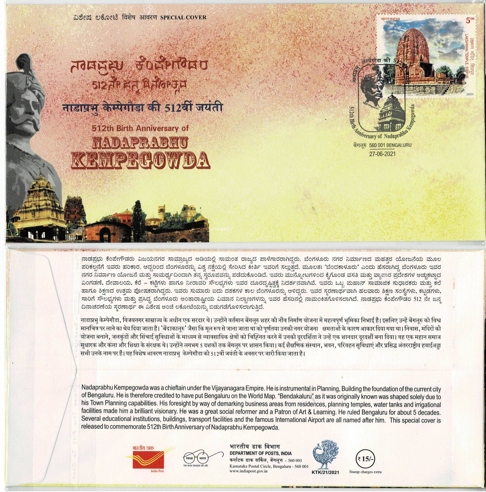 |
| 230 | Special Cover | Guru Pournami: Sri Shirdi Saibaba Mandiram, Near Stella College, Vijayawada | 24.07.2021 | Vijayawada | Andhra Pradesh | 520001 | |
| 231 | Special Cover | Combo: Kuthampally Handloom Weavers Co-op Society | 07.08.2021 | Kuthampally | Kerala | 680594 | |
| 232 | Special Cover | Kandangi Saree | 10.08.2021 | Karaikudi | Tamil Nadu | 630001 | |
| 233 | Special Cover | Nachiyarkoil Kuthuvilakku | 13.08.2021 | Natchar Koil | Tamil Nadu | 612602 |  |
| 234 | Special Cover | Madurai Sungudi Sarees | 13.08.2021 | Madurai | Tamil Nadu | 625001 | |
| 235 | Special Cover | Temple Jewellery of Nagercoil | 13.08.2021 | Nagercoil | Tamil Nadu | 629001 | |
| 236 | Special Cover | Namma Vijayanagara | 16.08.2021 | Hosapete | Karnataka | 583201 | |
| 237 | Special Cover | Salem Venpattu | 19.08.2021 | Salem | Tamil Nadu | 636001 | |
| 238 | Special Cover | Celebrating 80 Years of Thekkumari Kummatti Maholsava Sangam | 23.08.2021 | Thrissur | Kerala | 680001 | |
| 239 | Special Cover | Solapur Terry Towel | 26.08.2021 | Solapur | Maharashtra | 413001 | |
| 240 | Special Cover | Arani Silks | 26.08.2021 | Arni | Tamil Nadu | 632301 | |
| 241 | Special Cover | Bhavani Jamakkalam | 26.08.2021 | Bhavani | Tamil Nadu | 638301 | 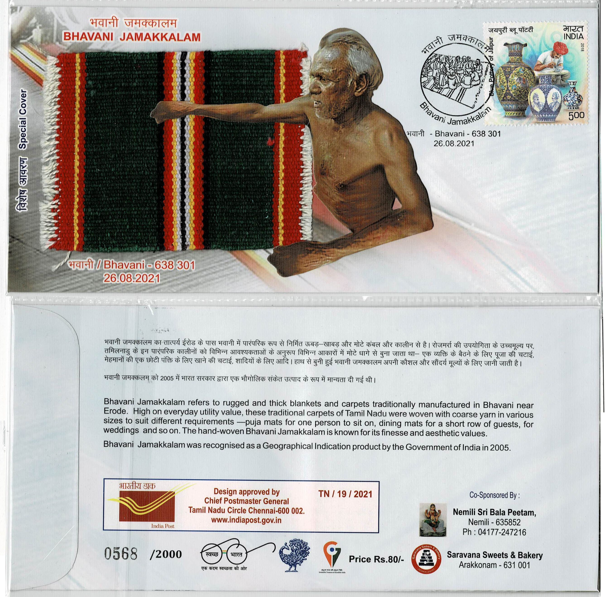 |
| 242 | Special Cover | Mangalvedha Jowar | 27.08.2021 | Mangalvedha | Maharashtra | 413305 | |
| 243 | Special Cover | Sri Gidugu Venkata Ramamurthy | 28.08.2021 | Nagarjuna Nagar | Andhra Pradesh | 522510 |  |
| 244 | Special Cover | Performance of Traditional Ramleela of Ayodhya on global arena by Ayodhya Research Institute | 29.08.2021 | Ayodhya | Uttar Pradesh | 224123 | |
| 245 | Special Cover | ISKCON: 125th Birth Anniversary - Srila Prabhupada | 31.08.2021 | Vijayawada | Andhra Pradesh | 520001 | |
| 246 | Special Cover | Sandur Lambani Embroidery | 31.08.2021 | Sandur | Karnataka | 583119 | |
| 247 | Special Cover | Kadidal Manjappa 1907-1992 | 13.10.2021 | Bengaluru | Karnataka | 560001 | |
| 248 | Special Cover | Combo: Veera Rani Abbakka | 13.10.2021 | Ullala | Karnataka | 575020 | |
| 249 | Special Cover | Veera Rani Abbakka | 13.10.2021 | Ullala | Karnataka | 575020 | |
| 250 | Special Cover | Dindigul Lock | 13.10.2021 | Dindigul | Tamil Nadu | 624003 | |
| 251 | Special Cover | Birth Centenary of R. K. Laxman | 24.12.2021 | Mysuru | Karnataka | 570010 | |
| 252 | Special Cover | Santipur Saree | 09.11.2021 | Kolkata | West Bengal | 700012 | |
| 253 | Special Cover | HMCI: Swarnim Vijay Varsh-India's Victory Over Pakistan 1971 War | 16.12.2021 | New Delhi | Delhi | 110001 |  |
| 254 | Special Cover | Maddalam of Palakkad | 27.12.2021 | Palakkad | Kerala | 678001 | |
| 255 | Special Cover | A Tribute to the Masters of Indian Cricket | 30.12.2021 | Mumbai | Maharashtra | 400001 | |
| 256 | Special Cover | We For Kannada | 30.12.2021 | Bengaluru | Karnataka | 560001 | |
| 257 | Special Cover | Wooden Mask of Kushmandi | 31.12.2021 | Siliguri | West Bengal | 734001 | |
| 258 | Special Cover | Paryaya Mahotsava-Shri Krishnapura Matha, Udupi | 18.01.2022 | Udupi | Karnataka | 576101 | |
| 259 | Special Cover | 125th Birth Anniversary of Netaji Subhas Chandra Bose: Tribute to Netaji feat. Balak Sena | 15.01.2022 | New Delhi | Delhi | 110001 |  |
| 260 | Special Cover | 125th Birth Anniversary of Netaji Subhas Chandra Bose: Tribute to Netaji feat. Jai Hind Postage Stamps | 15.01.2022 | New Delhi | Delhi | 110001 |  |
| 261 | Special Cover | 125th Birth Anniversary of Netaji Subhas Chandra Bose: Tribute to Netaji feat. Letter of Resignation | 15.01.2022 | New Delhi | Delhi | 110001 |  |
| 262 | Special Cover | 125th Birth Anniversary of Netaji Subhas Chandra Bose: Tribute to Netaji feat. Rani Jhansi Regiment | 15.01.2022 | New Delhi | Delhi | 110001 |  |
| 263 | Special Cover | 125th Birth Anniversary of Netaji Subhas Chandra Bose: Tribute to Netaji feat. Red Fort and Azad Hind Flag | 15.01.2022 | New Delhi | Delhi | 110001 |  |
| 264 | Special Cover | Statue of Equality: Sri Ramanuja Sahasrabdi | 02.02.2022 | Palamkole | Telangana | 509325 | |
| 265 | Special Cover | Arumbavur Wood Carving | 09.03.2022 | Tiruchirappalli | Tamil Nadu | 620001 | |
| 266 | Special Cover | Sri Talpagiri Ranganatha Swamy | 19.03.2022 | Nellore | Andhra Pradesh | 524001 | |
| 267 | Special Cover | Santiniketan Leather Goods | 07.04.2022 | Santiniketan | West Bengal | 731235 | 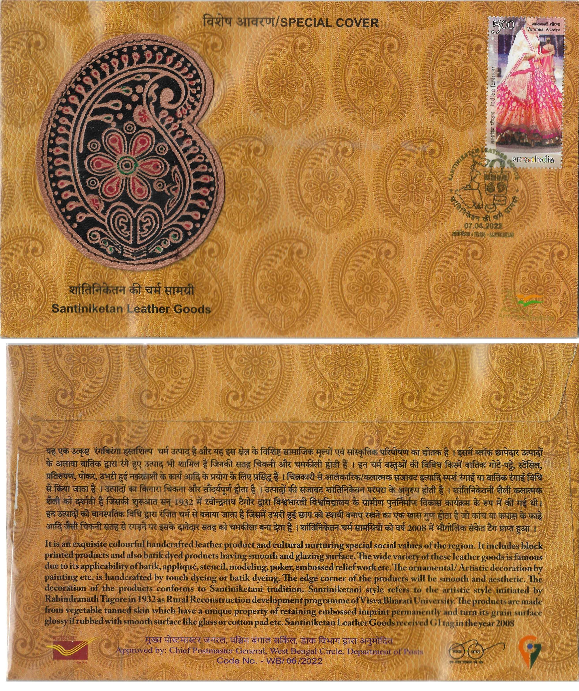 |
| 268 | Special Cover | Swarna Bandhana Maha Kumbhabhishekam, Skandagiri Temple | 07.05.2022 | Sitaphalmandi | Telangana | 500061 | |
| 269 | Special Cover | Combo: International Day of Yoga | 21.06.2022 | Mumbai | Maharashtra | 400001 | |
| 270 | Special Cover | International Day of Yoga 2022 | 21.06.2022 | Mumbai | Maharashtra | 400001 | |
| 271 | Special Cover | International Day of Yoga: Yoga for Humanity | 21.06.2022 | Chennai | Tamil Nadu | 600002 | 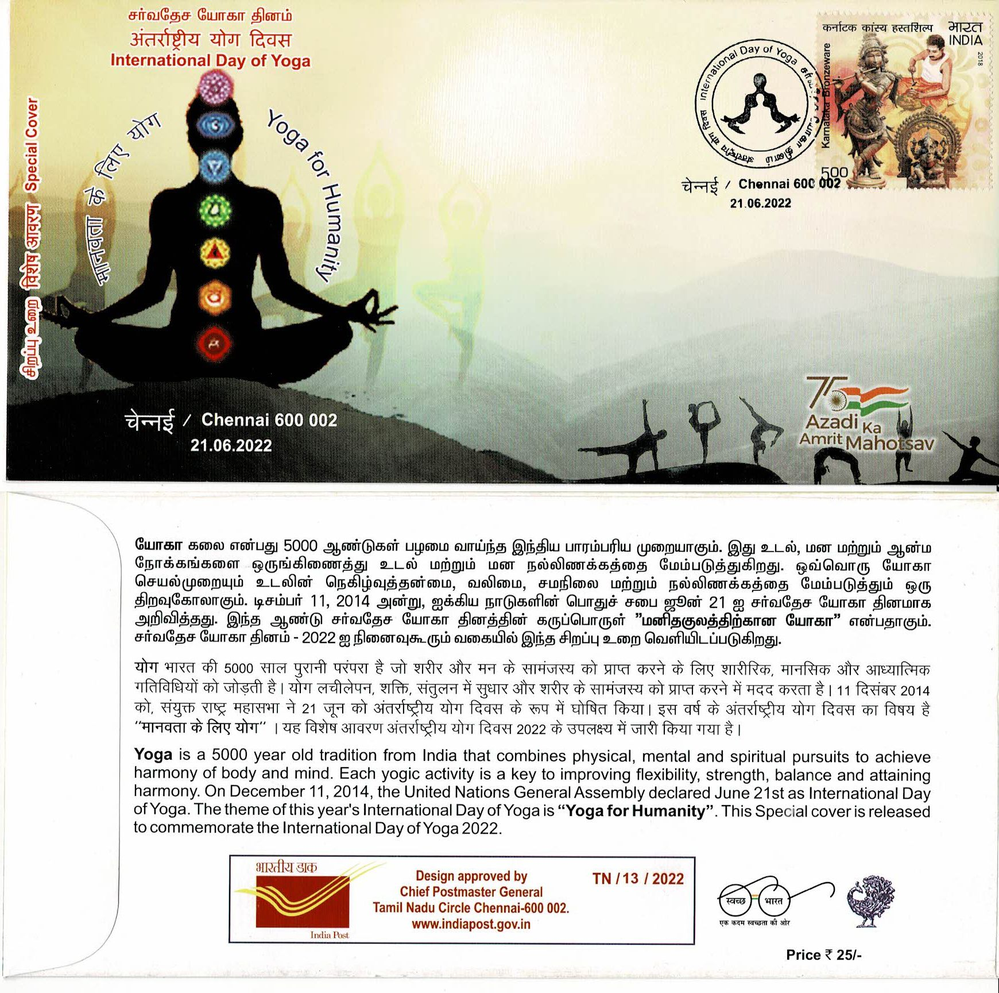 |
| 272 | Special Cover | Mount Carmel College - 75th Year Celebrations | 09.07.2022 | Bengaluru | Karnataka | 560001 | |
| 273 | Special Cover | President's Colour to Tamilnadu Police | 31.07.2022 | Chennai | Tamil Nadu | 600008 | |
| 274 | Special Cover | Pingali Venkayya: 146th Birth Anniversary of "Flagman of India" | 02.08.2022 | Krishna University | Andhra Pradesh | 521004 |  |
| 275 | Special Cover | Himavad Gopalaswamy Hill | 05.08.2022 | Gundlupet | Karnataka | 571111 | |
| 276 | Special Cover | State Human Rights Commission, Tamilnadu | 06.08.2022 | Chennai | Tamil Nadu | 600002 | |
| 277 | Special Cover | SIPA AMRITPEX 2022: K. Bhashyam Arya | 13.08.2022 | Chennai | Tamil Nadu | 600032 | |
| 278 | Special Cover | Raja Bahadur Venkata Rama Reddy's 152th Birth Anniversary | 22.08.2022 | Hyderabad | Telangana | 500001 | |
| 279 | Special Cover | National Sports Day: Elvera Britto | 29.08.2022 | Bengaluru | Karnataka | 560001 | 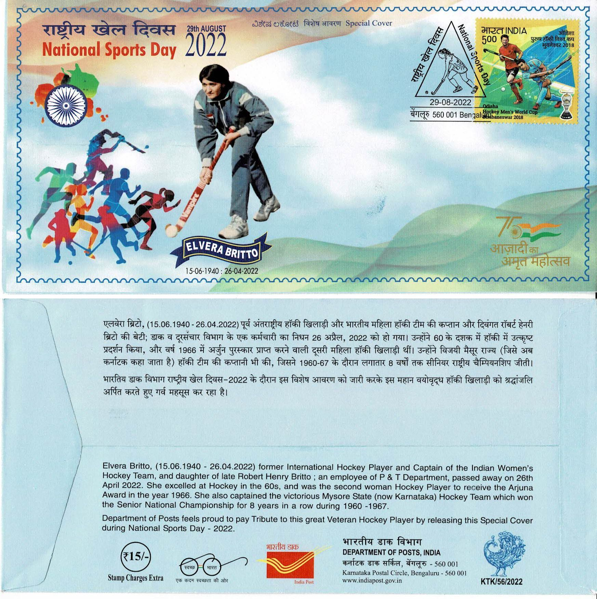 |
| 280 | Special Cover | Shri Shivaji Maharaj Co-op Credit Society Ltd., Vijayapura Silver Jubilee Ceremony 1997-2022 | 16.09.2022 | Vijayapura | Karnataka | 586101 | |
| 281 | Special Cover | Madras School of Social Work Platinum Jubilee Celebrations (1952-2022) | 06.10.2022 | Chennai | Tamil Nadu | 600008 | |
| 282 | Special Cover | Sri Paidimarri Venkata Subbarao | 11.10.2022 | Vijayawada | Andhra Pradesh | 520001 | |
| 283 | Special Cover | Shree Mahakal Lok | 13.10.2022 | Ujjain | Madhya Pradesh | 456001 | |
| 284 | Special Cover | UPHILEX-2022: Shri Ram Van Gaman Path, Ayodhya | 15.10.2022 | Lucknow | Uttar Pradesh | 226004 | |
| 285 | Special Cover | UPHILEX-2022: Shri Ram Van Gaman Path, Sita Kund, Sultanpur | 15.10.2022 | Lucknow | Uttar Pradesh | 226004 | 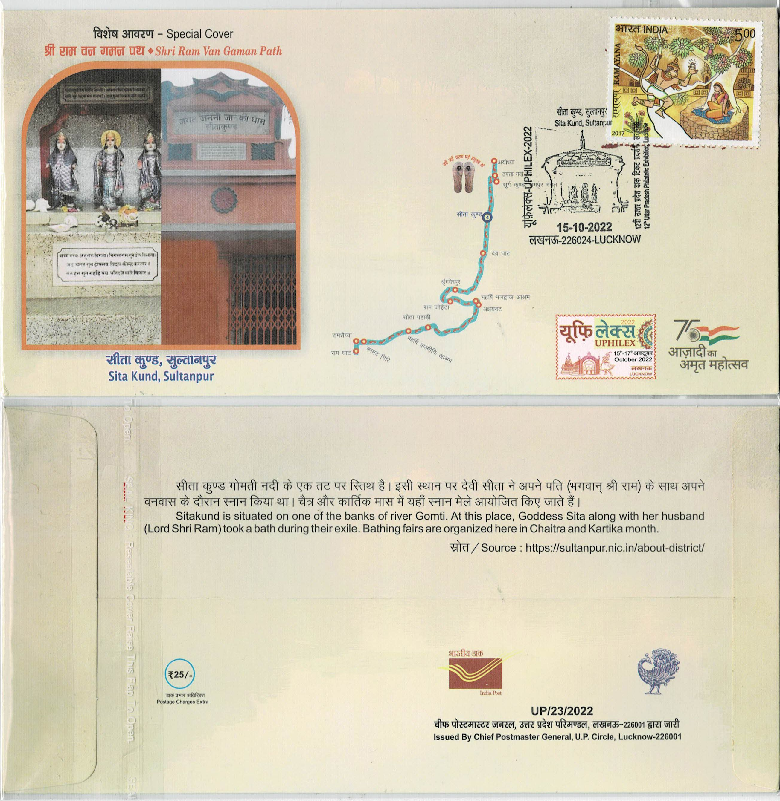 |
| 286 | Special Cover | UPHILEX-2022: Surya Kund, Rampur Bhagan, Ayodhya | 15.10.2022 | Lucknow | Uttar Pradesh | 226024 | |
| 287 | Special Cover | Invention of Khaki Colour at Mangaluru | 30.10.2022 | Mangaluru | Karnataka | 575001 | |
| 288 | Special Cover | Mangaluru Tiles | 30.10.2022 | Mangaluru | Karnataka | 575001 | |
| 289 | Special Cover | National Unity Day | 31.10.2022 | Mumbai | Maharashtra | 400001 | |
| 290 | Special Cover | Dev Deepawali, Varanasi | 07.11.2022 | Varanasi | Uttar Pradesh | 221001 | |
| 291 | Special Cover | Ganga Aarti, Varanasi | 07.11.2022 | Varanasi | Uttar Pradesh | 221001 | |
| 292 | Special Cover | Shree Kashi Vishwanath Dham, Varanasi | 07.11.2022 | Varanasi | Uttar Pradesh | 221001 | |
| 293 | Foreign Special Cover | BALIPHEX 2022: The Great Mahabharata | 11.11.2022 | Denpasar, Bali | Indonesia | 80111 |  |
| 294 | Foreign Special Cover | BALIPHEX 2022: Vrindavan Mathura Dhama of the Great Mahabharata | 11.11.2022 | Denpasar, Bali | Indonesia | 80111 |  |
| 295 | Foreign Special Cover | BALIPHEX 2022: Dvaraka Dhama of the Great Mahabharata | 12.11.2022 | Denpasar, Bali | Indonesia | 80111 |  |
| 296 | Foreign Special Cover | BALIPHEX 2022: Indraprasthha Dhama of the Great Mahabharata | 13.11.2022 | Denpasar, Bali | Indonesia | 80111 |  |
| 297 | Foreign Special Cover | BALIPHEX 2022: Hastina Pura Dhama of The Great Mahaharata | 14.11.2022 | Denpasar, Bali | Indonesia | 80111 |  |
| 298 | Special Cover | AMRITPEX 2023: National Philatelic Exhibition | 14.11.2022 | New Delhi | Delhi | 110001 |  |
| 299 | Foreign Special Cover | BALIPHEX 2022: Kuruksetra Dhama of the Great Mahabharata | 15.11.2022 | Denpasar, Bali | Indonesia | 80111 |  |
| 300 | Special Cover | Chinar Tree | 16.11.2022 | Gandhi Nagar | Jammu and Kashmir | 180004 |  |
| 301 | Special Cover | The Hyderabad Philatelic & Hobbies Society: HYPEX - DIAMOND - 2022 (1) | 19.11.2022 | Khairatabad | Telangana | 500004 |  |
| 302 | Special Cover | Combo: Festival of Indian Constitution | 19.11.2022 | Bengaluru | Karnataka | 560001 | |
| 303 | Special Cover | Festival of Indian Constitution | 19.11.2022 | Bengaluru | Karnataka | 560001 | |
| 304 | Special Cover | Ananthapura Lake Temple and Babiya | 19.11.2022 | Kumbala | Kerala | 671321 | |
| 305 | Special Cover | The Hyderabad Philatelic & Hobbies Society: HYPEX - DIAMOND - 2022 (3) | 21.11.2022 | Khairatabad | Telangana | 500004 | 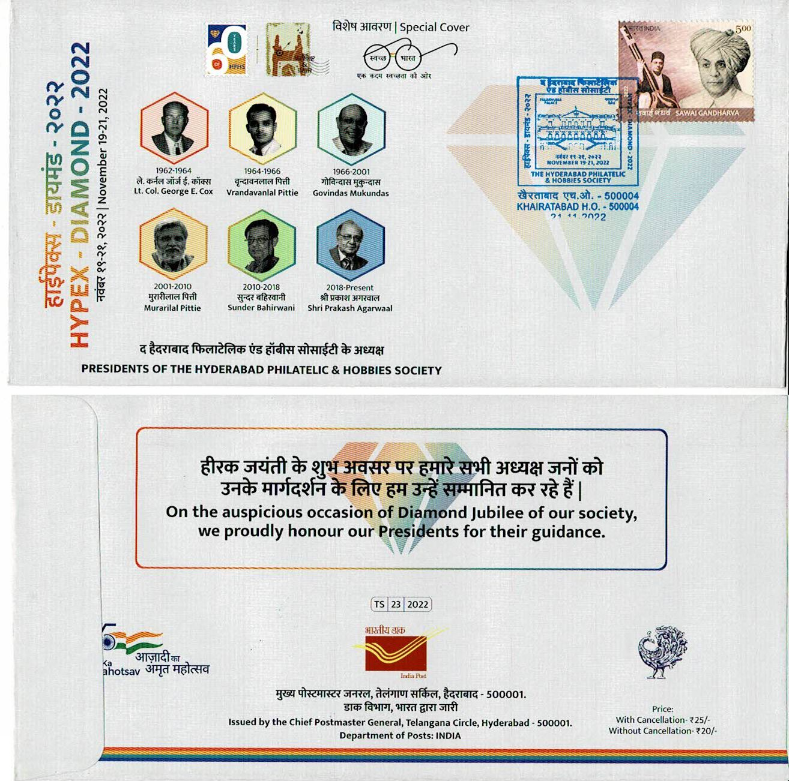 |
| 306 | Special Cover | Directorate of Public Health and Preventive Medicine: Tamilnadu's Reminiscence of Public Health DPHICON 2022 | 05.12.2022 | Mahabalipuram | Tamil Nadu | 603104 | |
| 307 | Special Cover | Celerating 60 Years of Creative Science: The Institute of Mathematical Sciences | 03.01.2023 | Taramani | Tamil Nadu | 600113 | |
| 308 | Special Cover | Manipal College of Pharmaceutical Sciences, Manipal: Celebrating 60 Years of Pharmacy Education | 05.01.2023 | Manipal | Karnataka | 576104 | |
| 309 | Special Cover | 86th All India Kannada Literary Conference | 06.01.2023 | Haveri | Karnataka | 581110 | |
| 310 | Special Cover | Birth Centenary: Marpalli Padmavati S Rao | 30.01.2023 | Puttur | Karnataka | 574201 | |
| 311 | Special Cover | Puppetry: India's Cultural Heritage | 14.02.2023 | Pragati Maidan | Delhi | 110001 |  |
| 312 | Special Cover | 50 Years for Women in Tamilnadu Police - Golden Jubilee | 17.03.2023 | Chennai | Tamil Nadu | 600003 | |
| 313 | Special Cover | Sri Male Mahadeshwara Swamy Statue | 18.03.2023 | Male Mahadeshwara Hills | Karnataka | 571490 |  |
| 314 | Special Cover | Shri Guru Bhagwat | 01.04.2023 | Baripada | Odisha | 757001 | |
| 315 | Special Cover | 50 Years of Project Tiger-Bandipur Tiger Reserve | 09.04.2023 | Bandipur | Karnataka | 571126 | |
| 316 | Special Cover | Ashok Roy Training Simulator Complex | 25.04.2023 | INS Rajali | Tamil Nadu | 631006 |  |
| 317 | Special Cover | Sharana Nuliya Chandayya | 19.05.2023 | Male Mahadeshwara Hills | Karnataka | 571490 |  |
| 318 | Travelled Special Cover | Combo: National Flag Day 1 | 22.07.2023 | Bengaluru | Karnataka | 560001 | |
| 319 | Travelled Special Cover | Combo: National Flag Day 2 | 22.07.2023 | Bengaluru | Karnataka | 560001 | |
| 320 | Travelled Special Cover | Dr. Sri Sri Sri Shivakumara Mahashivayogi 116th Birth Anniversary | 28.07.2023 | Bengaluru | Karnataka | 560001 | |
| 321 | Special Cover | Dr. Sri Sri Sri Shivakumara Mahashivayogi 116th Birth Anniversary | 28.07.2023 | Bengaluru | Karnataka | 560001 | |
| 322 | Travelled Special Cover | Gond Tribal Painting on Tusser Silk | 07.08.2023 | Nagpur | Maharashtra | 440001 |  |
| 323 | Special Cover | Chandrayaan-3 | 23.08.2023 | Bengaluru | Karnataka | 560001 | |
| 324 | Special Cover | 352nd Aradhana of Shri Raghavendra Teertha Swamiji | 30.08.2023 | Raichur | Karnataka | 584103 |  |
| 325 | Special Cover | Chandrayaan 3 | 01.09.2023 | Chennai | Tamil Nadu | 600007 | |
| 326 | Special Cover | Celebrating 20 Years of Institute of Genetic Engineering | 01.09.2023 | Kolkata | West Bengal | 700128 | |
| 327 | Special Cover | RAJPEX-2023: Kurjaan of Khinchan | 27.09.2023 | Jaipur | Rajasthan | 302015 | |
| 328 | Special Cover | Divinity in Clay | 19.10.2023 | Kolkata | West Bengal | 700001 | 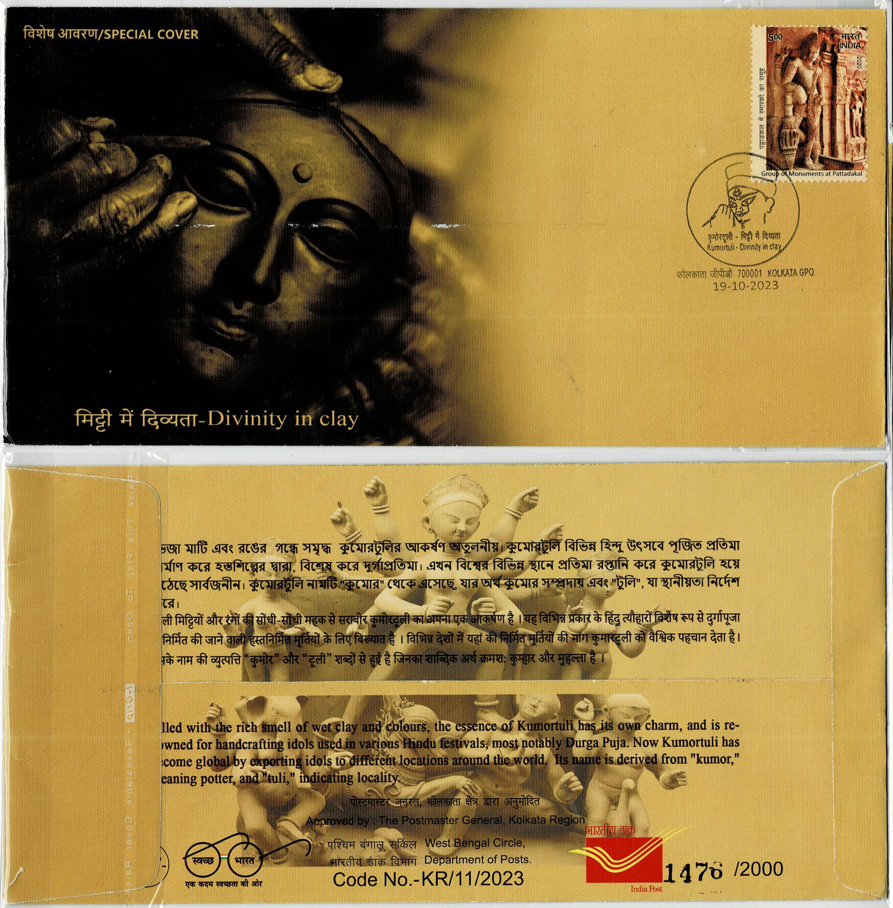 |
| 329 | Special Cover | Raman Research Institute Platinum Jubilee 1948-2023 | 07.11.2023 | Bengaluru | Karnataka | 560001 | 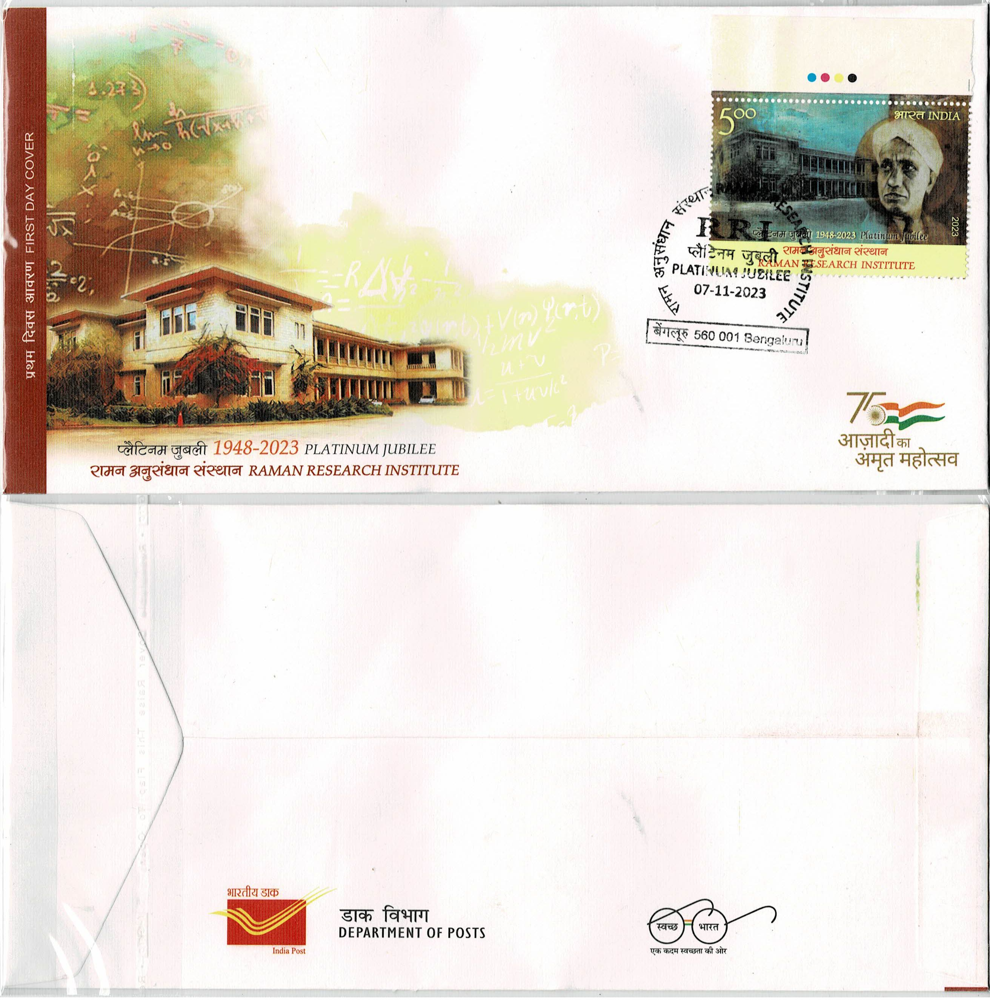 |
| 330 | Travelled Special Cover | Combo: Happy Deepavali | 10.11.2023 | Aurangabad | Maharashtra | 431001 | |
| 331 | Special Cover | Udupi Postal Division, Udupi | 19.11.2023 | Udupi | Karnataka | 576101 | |
| 332 | Foreign Special Cover | BALIPHEX 2023: The Great Ramayana Sri Rama Ayodhya Day 1 | 23.11.2023 | Denpasar, Bali | Indonesia | 80111 |  |
| 333 | Foreign Special Cover | BALIPHEX 2023: The Great Ramayana. Ramayana All Day | 23.11.2023 | Denpasar, Bali | Indonesia | 80111 |  |
| 334 | Foreign Special Cover | BALIPHEX 2023: The Great Ramayana Sita Rama Day 2 | 24.11.2023 | Denpasar, Bali | Indonesia | 80111 |  |
| 335 | Foreign Special Cover | BALIPHEX 2023: The Great Ramayana Sri Hanuman Lila Day 3 | 25.11.2023 | Denpasar, Bali | Indonesia | 80111 |  |
| 336 | Foreign Special Cover | BALIPHEX 2023: The Great Ramayana Sri Jatayu Lila Day | 26.11.2023 | Denpasar, Bali | Indonesia | 80111 |  |
| 337 | Special Cover | AVANTIKAPEX 2023: Deep Stambh Shaktipeeth Harsiddhi Mata Mandir, Ujjain | 28.11.2023 | Ujjain | Madhya Pradesh | 456001 | |
| 338 | Special Cover | AVANTIKAPEX 2023: Shree Maa Bagalamukhi Shaktipeeth Charitable Trust, Khachrod | 28.11.2023 | Ujjain | Madhya Pradesh | 456001 | |
| 339 | Travelled Special Cover | Platinum Jubilee Celebration, Govt. Medical College, Nagpur | 01.12.2023 | Nagpur | Maharashtra | 440001 | |
| 340 | Special Cover | Mahadji Shinde Chhatri | 07.12.2023 | Pune | Maharashtra | 411005 | |
| 341 | Travelled Special Cover | Mohammed Rafi Birth Centenary Celebrations | 24.12.2023 | Sion | Maharashtra | 400022 | |
| 342 | Travelled Special Cover | Dr. Puneeth Rajkumar | 05.01.2024 | Bengaluru | Karnataka | 560001 | 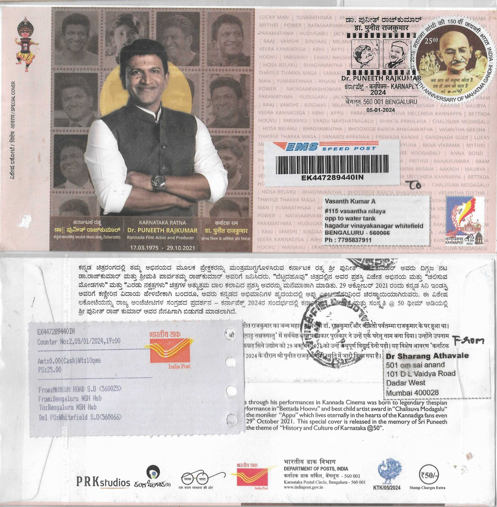 |
| 343 | Travelled Special Cover | Kaavi Kale | 05.01.2024 | Bengaluru | Karnataka | 560001 | |
| 344 | Travelled Special Cover | Karnataka Naming Golden Jubilee, Kannada Sahitya Parishad | 05.01.2024 | Bengaluru | Karnataka | 560001 | |
| 345 | Special Cover | Mysore Sandal | 05.01.2024 | Bengaluru | Karnataka | 560001 | |
| 346 | Special Cover | Sir M. Visvesvaraya's Contribution | 05.01.2024 | Bengaluru | Karnataka | 560001 | |
| 347 | Travelled Special Cover | Aditya-L1 - First Solar Mission of Bharat | 06.01.2024 | Bengaluru | Karnataka | 560001 | |
| 348 | Special Cover | Aditya-L1 - First Solar Mission of Bharat Meter Franked Cover | 06.01.2024 | Bengaluru | Karnataka | 560001 | |
| 349 | Travelled Special Cover | Bannerughatta Biological Park, Bengaluru | 06.01.2024 | Bengaluru | Karnataka | 560001 | |
| 350 | Travelled Special Cover | Digital Currency of Bharat | 06.01.2024 | Bengaluru | Karnataka | 560001 | |
| 351 | Travelled Special Cover | Guinness World Record Sea Shell Art Museum, Mysuru | 06.01.2024 | Bengaluru | Karnataka | 560001 | |
| 352 | Special Cover | Memorial to the Founder of IISc | 06.01.2024 | Bengaluru | Karnataka | 560001 | |
| 353 | Special Cover | Nurturing Mental Wellness: Self-care and Social Connections | 07.01.2024 | Bengaluru | Karnataka | 560001 | |
| 354 | Travelled Special Cover | Kaffipudi Sakamma | 08.01.2024 | Bengaluru | Karnataka | 560001 |  |
| 355 | Special Cover | Chaturbhuj Shri Ram Temple Mandav | 22.01.2024 | Indore | Madhya Pradesh | 452001 | |
| 356 | Special Cover | Consecration of Shri Ram Mandir Ayodhya Dham | 22.01.2024 | Patna | Bihar | 800001 | |
| 357 | Special Cover | Sree Kumaraswamy Temple, Sandur | 30.01.2024 | Ballari | Karnataka | 583101 | |
{kind=link}
{kind=link}
{kind=link}
{kind=link}
{kind=link}
{kind=link}
{kind=link}
{kind=link}
{kind=link}
{kind=link}
{kind=link}
{kind=link}
{kind=link}
{kind=link}
{kind=link}
{kind=link}
{kind=link}
{kind=link}
{kind=link}
{kind=link}
{kind=link}
{kind=link}
{kind=link}
{kind=link}
{kind=link}
{kind=link}
{kind=link}
{kind=link}
{kind=link}
{kind=link}
{kind=link}
{kind=link}
{kind=link}
{kind=link}
{kind=link}
{kind=link}
{kind=link}
{kind=link}
{kind=link}
{kind=link}
{kind=link}
{kind=link}
{kind=link}
{kind=link}
{kind=link}
{kind=link}
{kind=link}
{kind=link}
{kind=link}
{kind=link}
{kind=link}
{kind=link}
{kind=link}
{kind=link}
{kind=link}
{kind=link}
{kind=link}
{kind=link}
{kind=link}
{kind=link}
{kind=link}
{kind=link}
{kind=link}
{kind=link}
{kind=link}
{kind=link}
{kind=link}
{kind=link}
{kind=link}
{kind=link}
{kind=link}
{kind=link}
{kind=link}
{kind=link}
{kind=link}
{kind=link}
{kind=link}
{kind=link}
{kind=link}
{kind=link}
{kind=link}
{kind=link}
{kind=link}
{kind=link}
{kind=link}
{kind=link}
{kind=link}
{kind=link}
{kind=link}
{kind=link}
{kind=link}
{kind=link}
{kind=link}
{kind=link}
{kind=link}
{kind=link}
{kind=link}
{kind=link}
{kind=link}
{kind=link}
{kind=link}
{kind=link}
{kind=link}
{kind=link}
{kind=link}
{kind=link}
{kind=link}
{kind=link}
{kind=link}
{kind=link}
{kind=link}
{kind=link}
{kind=link}
{kind=link}
{kind=link}
{kind=link}
{kind=link}
{kind=link}
{kind=link}
{kind=link}
{kind=link}
{kind=link}
{kind=link}
{kind=link}
{kind=link}
{kind=link}
{kind=link}
{kind=link}
{kind=link}
{kind=link}
{kind=link}
{kind=link}
{kind=link}
{kind=link}
{kind=link}
{kind=link}
{kind=link}
{kind=link}
{kind=link}
{kind=link}
{kind=link}
{kind=link}
{kind=link}
{kind=link}
{kind=link}
{kind=link}
{kind=link}
{kind=link}
{kind=link}
{kind=link}
{kind=link}
{kind=link}
{kind=link}
{kind=link}
{kind=link}
{kind=link}
{kind=link}
{kind=link}
{kind=link}
{kind=link}
{kind=link}
{kind=link}
{kind=link}
{kind=link}
{kind=link}
{kind=link}
{kind=link}
{kind=link}
{kind=link}
{kind=link}
{kind=link}
{kind=link}
{kind=link}
{kind=link}
{kind=link}
{kind=link}
{kind=link}
{kind=link}
{kind=link}
{kind=link}
{kind=link}
{kind=link}
{kind=link}
{kind=link}
{kind=link}
{kind=link}
{kind=link}
{kind=link}
{kind=link}
{kind=link}
{kind=link}
{kind=link}
{kind=link}
{kind=link}
{kind=link}
{kind=link}
{kind=link}
{kind=link}
{kind=link}
{kind=link}
{kind=link}
{kind=link}
{kind=link}
{kind=link}
{kind=link}
{kind=link}
{kind=link}
{kind=link}
{kind=link}
{kind=link}
{kind=link}
{kind=link}
{kind=link}
{kind=link}
{kind=link}
{kind=link}
{kind=link}
{kind=link}
{kind=link}
{kind=link}
{kind=link}
{kind=link}
{kind=link}
{kind=link}
{kind=link}
{kind=link}
{kind=link}
{kind=link}
{kind=link}
{kind=link}
{kind=link}
{kind=link}
{kind=link}
{kind=link}
{kind=link}
{kind=link}
{kind=link}
{kind=link}
{kind=link}
{kind=link}
{kind=link}
{kind=link}
{kind=link}
{kind=link}
{kind=link}
{kind=link}
{kind=link}
{kind=link}
{kind=link}
{kind=link}
{kind=link}
{kind=link}
{kind=link}
{kind=link}
{kind=link}
{kind=link}
{kind=link}
{kind=link}
{kind=link}
{kind=link}
{kind=link}
{kind=link}
{kind=link}
{kind=link}
{kind=link}
{kind=link}
{kind=link}
{kind=link}
{kind=link}
{kind=link}
{kind=link}
{kind=link}
{kind=link}
{kind=link}
{kind=link}
{kind=link}
{kind=link}
{kind=link}
{kind=link}
{kind=link}
{kind=link}
{kind=link}
{kind=link}
{kind=link}
{kind=link}
{kind=link}
{kind=link}
{kind=link}